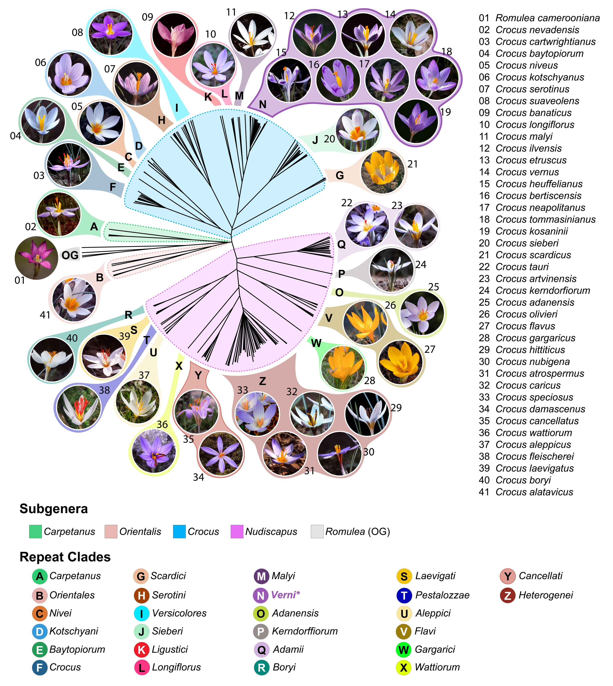

Crocus pan-repeatome
Phylogeny and repeat clades across Crocus and the outgroup Romulea.

Tap the image to zoom. Full-resolution PNG (35 MB).

Questions or comments
I'd love to hear from you. Your message goes straight to my inbox.
Phylogeny and repeat clades across Crocus and the outgroup Romulea.

Tap the image to zoom. Full-resolution PNG (35 MB).
I'd love to hear from you. Your message goes straight to my inbox.